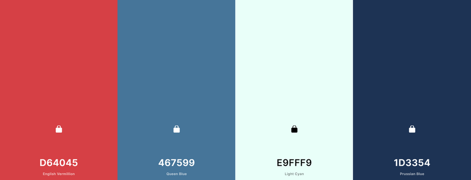

Color Scheme
English Vermillion is the site's primary color and will be applied to the nav and the footer. Queen blue and light cyan are both accent colors which will be used on elements that should stand out and on things like borders. Prussian blue is a secondary color that will be used on important elements that are not the nav or the footer.